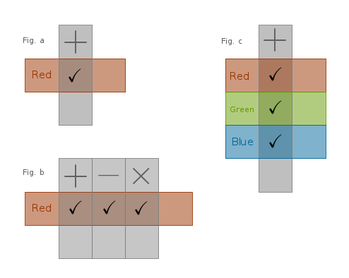
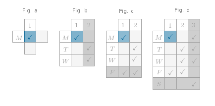
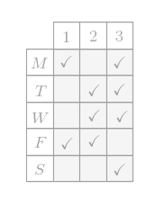
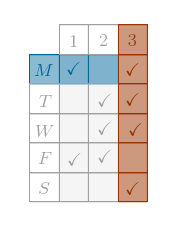
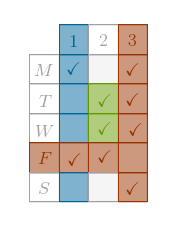
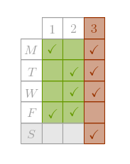
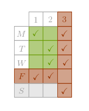
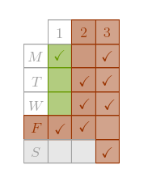
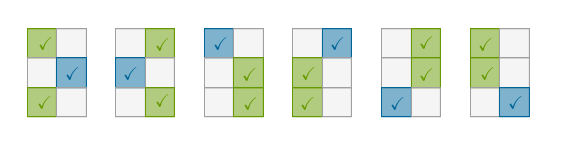

Problem
A math professor \(R\)(iddler) tells two math students, \(S\)(um) and \(P\)(roduct), so that both can hear:
- I have two non-equal natural numbers in mind: both are greater than one and their sum is less than \(100\). To \(P\) I will whisper their product so that \(S\) can not hear it (and \(R\) does). To \(S\) I will whisper their sum so that \(P\) can not hear it (and \(R\) does).
Later on the following dialog between \(P\) and \(S\) ensues:
\(P\): I can not name these numbers.
\(S\): I knew ahead of time that you would not be able to.
\(P\): But then I know them!
\(S\): But then so do I!
Assuming that all the participants speak the truth at all times, what are these numbers?
Smallest Freudenthal
This problem is known as the Sum and Product Problem, or an Impossible Problem or the Freudenthal Problem, after a German-born Dutch mathematician Hans Freudenthal.
First published in 1969, this problem was solved in a multitude of ways. In this section I would like to concentrate on an activity popular in mathematics and physics - constructing a toy model of the problem with the purpose of gaining an insight into the method of its solution.
Such a model should:
- be as simple as possible
- be as small as possible
- be as abstract as possible
- address the essence of the problem
To construct the smallest Freudenthal Problem we will use a two-dimensional matrix whose rows and columns correspond to two arbitrary object types or properties that may or may not have a logical connection with each other. These two object types (or properties) may be attached to a third, external, object that is not captured in the matrix explicitly. For example, a month and a date may be attached to a person's birthday.
We can view a cell of such a matrix as an intersection of a given column with a given row. Since a given column represents a concrete value of one object type and a given row represents a concrete value of the other object type, the meaning of the data assigned to such a cell is:
an existence of a simultaneous agreement between two concrete values of the corresponding object types
where we will take it that the actual values that represent the above existence are strictly binary - a simultaneous agreement either exists or does not exist. Graphically we will capture the non-existence of a simultaneous agreement with an empty cell and a cell with a check mark in it will represent the existence of a simultaneous agreement.
For example, let one object type represent arithmetic operators: addition, subtraction, multiplication, etc., and let the other object type represent colors: red, green, blue, etc. If, being authors of a problem, we decide that "red pluses exist" then we will capture that fact in a matrix by placing a check mark in a cell that corresponds to the intersection of the "plus" column and the "red" row (Fig. a):
If we decide that more "red" arithmetic operators exist then we will put a check mark in each cell of the "red" row that corresponds to a "red operator" column, Fig. b.
If we decide that a given operator with multiple colors exists then we will put a check mark in each cell of the "plus" column that corresponds to a "colored plus" row, Fig. c.
Lastly, we observe that it does not really matter which object type designates columns and which object type designates rows and it does not really matter how we capture the binary nature of the existence of a simultaneous agreement - instead of empty cells and check marks we might use zeros and ones just as well.
Model
For our toy model we will use the following setting:
A physics professor \(A\), for \(A\)uthor, gives two students, \(S\) and \(P\), a mix of space and time coordinates for the exam:
- The physics exam will take place on one of the days next week in one of the rooms ...
To \(S \; A\) whispers the room number so that \(P\) can not hear it and to \(P \; A\) whispers the day of the week so that \(S\) can not hear it:
- See you there!
Later on the following (compressed) dialog between \(P\) and \(S\) ensues (the statements made by each party are numbered):
\(P_1\): I do not know.
\(S_1\): I knew that.
\(P_2\): But then I know!
\(S_2\): And so do I!
Objective
Our task is to construct the smallest Freudenthal problem that:
- has a unique solution
- fits the above dialog
- makes it possible for us, problem solvers or Observers from now on, to say after \(S_2\): "And so do we!"
which brings us to the following
Observations
- there are four participants or reference frames in this problem: \(A\), \(P\), \(S\) and \(O\)
- \(A\) is an author of the problem who knows both keys, \(k_p\) and \(k_s\), that constitute the problem's solution
- \(P\) is a person who knows only \(k_p\) and deduces \(k_s\)
- \(S\) is a person who knows only \(k_s\) and deduces \(k_p\)
- \(O\) is a side observer who must deduce both keys
- all four participants have equal access to public information (problem statement)
- the solution paths in the reference frames of \(P, S\) and \(O\) must lead to a unique answer in a purely logical way without guessing
- \(P, S\) and \(O\) must be able to solve the problem only at the stages that agree with the dialog: \(P\) should be able to announce \(P_2\) only after \(S_1\) and not earlier, \(S\) should be able to announce \(S_2\) only after \(P_2\) and not earlier, \(O\) should be able to announce the answer only after \(S_2\) and not earlier
Construction
One way to construct the smallest Freudenthal problem is via Reverse Order approach. We will start with the final stage of the problem's solution when \(O\) announces "And so do we!" and then we will work our way backward through the statements \(S_2, P_2, S_1\) and \(P_1\).
Let us designate the rooms with small natural numbers:
$$1, 2, 3, \dots$$Let us designate the days of the week by their first letters and let us use only the unique abbreviations:
$$M(onday), \; T(uesday), \; W(ednesday), \; F(riday), \; S(aturday)$$Let the room numbers designate the columns and the days of the week designate the rows. As Authors, to get a firm grip on the situation, let us design a problem for which the answer is "Monday, room \(1\)" or \(M1\). Consequently, \(1\) was whispered to \(S\) and Monday was whispered to \(P\).
Then, immediately after \(O\) announces the correct answer, \(M1\), the corresponding region of the matrix must be just one cell \(M1\), Fig. a:
Let us move backward to the state "immediately after \(S_2\)". The region of the matrix that corresponds to that state must contain the smallest amount of eliminable choices - after hearing \(S_2 \; O\) should be able to remove these choices with certainty and announce the correct answer.
One such choice can not be \(T1\) because then \(S\) can not announce \(S_2\) and it can not be \(M2\) because then \(P\) can not announce \(P_2\). It follows then that one choice must be \(T2\). However, we can not leave the matrix in the state with check marks in only \(M1\) and \(T2\) because then \(O\) still can not deduce the answer even after \(S_2\).
Since \(O\) makes decisions based on the statements made by \(S\), it is the column that corresponds to the room number \(2\) that should be eliminated by \(O\) in the last step - after hearing \(S_2\), \(O\) thinks: "since a unique solution exists, first announced by \(P\) and now confirmed by \(S\), I have to eliminate all the rooms in which the physics exam can take place on multiple days". Such only room is the room number \(2\) - in it the physics exam may take place on Tuesday or Wednesday. After eliminating the entire "\(2\)" column, the only choice for the space and time coordinates for the physics exam is room \(1\), Monday.
Consequently, the region of the matrix that corresponds to the state "immediately after \(S_2\)" has the check marks in the following cells: \(M1, T2, W2\), Fig. b:
Let us move backward to the state "immediately after \(P_2\)". At this point both, \(S\) and \(O\), learn that a problem has a unique solution but \(S\) must announce \(S_2\) first.
After hearing \(P_2\), \(S\) thinks: "aha, since a unique solution exists, it means that I have to eliminate all the days of the week on which the physics exam can take place in multiple rooms".
To keep the problem as small as possible, we have to make \(S\) hesitate between Monday and Friday in such a way that \(S\) can eliminate the entire "Friday" row. To make the "Friday" row eliminable we have to place a check mark in that row in one extra column - a column that corresponds to the room number \(2\).
Consequently, the region of the matrix that corresponds to the state "immediately after \(P_2\)" has the check marks in the following cells: \(M1, T2, W2, F1, F2\), Fig. c:
Let us move backward to the state "immediately after \(S_1\)". At this point all the remaining participants learn from \(S\) that \(P\) never had a chance to deduce the correct answer to this problem right away. For \(S\) to be able to announce \(S_1\) we have to add one extra column to our matrix to represent the room number \(3\) and one extra row to represent Saturday.
By placing a check mark in the cell \(M3\), we, as \(A\)uthors, are making sure that the physics exam can take place on Monday or Friday in multiple rooms so that \(S_1\) holds and \(P\) can not announce the correct answer to this problem right away but has to state \(P_1\) instead.
By placing a check mark in the cell \(S3\) we are making sure that \(P\) can eliminate the entire column "\(3\)" and announce \(P_2\).
By placing the check marks in the cells \(T3\) and \(W3\) we are making sure that \(O\) keeps hesitating until \(S_2\).
Since we already have enough information filled in in the matrix, \(P\) has no choice but to announce \(P_1\) and we claim that we have constructed the smallest Freudenthal problem, captured graphically in Fig. d:
We can now test our arrangement with forward logic in all four reference frames.
Reference Frame of \(A\):
- The physics exam will take place on one of the days next week in one of the rooms: on Monday - in rooms \(1\) or \(3\), on Tuesday and Wednesday - in rooms \(2\) or \(3\), on Friday - in rooms \(1\) or \(2\), on Saturday - in room \(3\).
- To \(S\) I will whisper the room number so that \(P\) can not hear it (and \(A\) does). To \(P\) I will whisper the day of the week so that \(S\) can not hear it (and \(A\) does).
- See you there!
Reference Frame of \(P\):
1) \(P\) is told by \(A\) that the exam will take place on Monday. Based on the information available publicly, \(P\) constructs the matrix:
and sees that on Monday the physics exam may take place in two rooms: \(1\) or \(3\). Since \(P\) can not deduce the correct answer logically right away because of the lack of information, (s)he announces \(P_1\):
- I do not know.
2) \(S\) announces \(S_1\):
- I knew that.
3) \(P\) thinks: first of all, instead of announcing the correct answer, \(S\) announced \(S_1\). Consequently, at this stage of the problem's solution \(S\) can not logically deduce that answer.
Second of all, why \(S\) is absolutely sure that I could not have possibly been able to deduce the correct answer to this problem right away? Because \(S\) was not given a room which is the only room in which the physics exam can take place on a certain day. Let me check this.
I do not know which room was given to \(S\) but since I was told that the physics exam will take place on Monday, I know that it can take place in rooms \(1\) or \(3\). Consequently, \(S\) is given either \(1\) or \(3\).
If \(S\) is given room \(1\) then, based on the constructed matrix, (s)he sees that if I am given Monday then I am guaranteed to hesitate between the rooms \(1\) and \(3\) and if I am given Friday then I am guaranteed to hesitate between the rooms \(1\) and \(2\). Check.
If \(S\) is given room \(3\) then (s)he sees that if I am given Monday, Tuesday or Wednesday then I am guaranteed to hesitate between two rooms but if I am given Sunday then I would definitely not hesitate and I would announce the correct answer right away - Sunday, room \(3\).
But \(S\) is absolutely sure that the last scenario can not possibly occur and that means that \(S\) was not given room \(3\). Consequently, I can safely eliminate the entire column "\(3\)", which leaves me with only one room in which the physics exam can take place on Monday - room \(1\):
I now have logically deduced the correct answer, \(M1\), and can announce \(P_2\):
- But then I know!
Reference Frame of \(S\):
1) \(P\) announces \(P_1\):
- I do not know.
2) \(S\) is told by \(A\) that the exam will take place in the room number \(1\). Based on the information available publicly, \(S\) constructs the matrix:
and sees that the physics exam may take place in that room on two days: Monday or Friday. Since \(S\) can not deduce the correct answer logically right away, \(S\) thinks:
- I know that the physics exam must take place in the room number \(1\). However, in that room the physics exam may take place on Monday or Friday. Consequently, \(P\) is given either Monday or Friday. If \(P\) is given Monday then (s)he will hesitate between the rooms \(1\) and \(3\) and if \(P\) is given Friday then (s)he will hesitate between the rooms \(1\) and \(2\). Hm, in either case the poor sucker does not have a chance!
At this point \(S\) announces \(S_1\):
- I knew that.
3) \(P\) announces \(P_2\):
- But then I know!
4) \(S\) thinks: aha, a unique solution to this problem exists. After hearing my statement \(S_1\), \(P\) must have eliminated either entire column "\(2\)" or entire column "\(3\)". \(P\) could not have eliminated column "\(2\)" because on each day when the physics exam may take place in room \(2\) it may also take place in an other room. Consequently, \(P\) must have eliminated column "\(3\)". Why?
Because \(P\) realized that the only reason why I can be so sure that (s)he never had a chance of deducing the correct answer to this problem right away is because I was not given a room which is the only room in which the physics exam may take place on a certain day.
Since there exists a day of the week, Saturday, on which the physics exam may take place in one room only, room \(3\), \(P\) deduced that I could not have been given room \(3\), eliminated the entire column \(3\) and announced \(P_2\). It means that after eliminating the entire column \(3\) I can safely eliminate all the days of the week on which the physics exam may take place in multiple rooms.
In this case the only such day is Friday - after eliminating the entire "Friday" row the only day on which the physics exam may take place in room \(1\) is Monday:
I have deduced the correct answer, \(M1\), logically and can now announce \(S_2\):
- And so do I!
Reference Frame of \(O\):
1) We construct the matrix based on the public information given by \(A\):
and observe that we can not announce the correct answer to this problem yet.
2) From \(P_1\) we conclude that \(P\) is given a day of the week on which the physics exam can take place in multiple rooms: Monday, Tuesday, Wednesday or Friday. Also, we can not announce the correct answer to this problem yet.
3) From \(S_1\) we conclude that:
- \(S\) does not know the correct answer to the problem yet, which means that (s)he is given a room in which the physics exam may take place on multiple days: \(1, 2\) or \(3\)
- \(S\) is not given a room which is the only room in which the physics exam may take place on a certain day:
we check the matrix and see that if \(S\) is given room \(1\) then (s)he sees that if \(P\) is given Monday then \(P\) is guaranteed to hesitate between the rooms \(1\) and \(3\) and if \(P\) is given Friday then \(P\) is guaranteed to hesitate between the rooms \(1\) and \(2\). Consequently, room \(1\) could have been given to \(S\).
If \(S\) is given room \(2\) then (s)he sees that if \(P\) is given Tuesday or Wednesday then \(P\) is guaranteed to hesitate between the rooms \(2\) and \(3\) and if \(P\) is given Friday then \(P\) is guaranteed to hesitate between the rooms \(1\) and \(2\). Consequently, room \(2\) could have been given to \(S\).
If \(S\) is given room \(3\) then (s)he sees that if \(P\) is given Monday, Tuesday or Wednesday then \(P\) is guaranteed to hesitate between two rooms but if \(P\) is given Sunday then \(P\) would definitely not hesitate and \(P\) would announce the correct answer right away - Sunday, room \(3\). Consequently, room \(3\) could not have been given to \(S\) and we, Observers, can safely eliminate the entire column "\(3\)".
Purely mechanically, we scan the matrix to find all the rows that have only one check mark in them and then we eliminate the entire column in which the sole check mark is located. Consequently, after \(S_1\) this is what our matrix looks like:
and we observe that we can not announce the correct answer to this problem yet.
4) From \(P_2\) we conclude that a unique solution for this problem exists, meaning that on the day of the week given to \(P\) the physics exam may take place in only one room. It means that at that stage of the problem's solution we can safely eliminate all the rows of the matrix that are either empty or have more than one check mark in them.
In our particular case the only such row is the row that corresponds to Friday since on that day the physics exam may take place in the rooms \(1\) and \(2\). Consequently, after eliminating the entire "Friday" row, this is what our matrix looks like:
and we observe that we can not announce the correct answer to this problem yet as there are three days of the week on which the physics exam may take place in one room only: Monday, Tuesday, Wednesday.
5) From \(S_2\) we conclude that in the room number given to \(S\) the physics exam may take place on one day of the week only. It means that at that stage of the problem's solution we can safely eliminate all the columns that are either empty or have more than one check mark in them.
In our particular case the only such column is the column that corresponds to the room number \(2\) since in that room the physics exam may take place on Tuesday or Wednesday. Consequently, after eliminating the entire "\(2\)" column, this is what our matrix looks like:
We see that after all the eliminations the only choices for the space and time coordinates for the physics exam are room \(1\) and Monday. Since we have logically deduced the correct answer to this problem, we can now announce:
- And so do we: the physics exam will take place on Monday in room \(1\).
Conclusion
1) We see that the only other possible final formation of check marks that can not be obtained from the above L-shaped formation by the means of geometric transformations of translation and rotation is the triangular formation:
Using the above final formations it is possible to construct the Freudenthal problems around them at will.
2) In our toy model there is no logically deducible relation between the
day of the week and the room number. In the original Freudenthal problem,
on the other hand, there is a logically deducible relation between a sum and
a product:
- factors of a given number can be used as terms that add up to a certain sum
- terms of a sum can be used as factors that multiply to a certain product
3) A template for an analytic solution of these types of problems is the
following one:
- negate a given statement by asking when would a person not be able to announce that statement?
- obtain certain amount of information from the above negation
- negate the above information since the person did announce the statement
For example, in our toy model we can negate \(P_1\) by asking when would \(P\) not be able to announce \(P_1\). From the constructed matrix it follows that if \(P\) were given Saturday then (s)he would not be able to announce \(P_1\). But \(P\) did announce \(P_1\) and hence (s)he could not have been given Saturday.
In the original problem we would observe that if \(P\) were given a number that is a product of two primes then \(P\) would not be able to announce \(P_1\). However, \(P\) did announce \(P_1\) and hence (s)he was given a number that is not a product of two primes.
4) A template for a mechanical or a computer-based solution of these types
of problems is the following one:
- construct a matrix that reflects the initial problem statement. A certain amount of additional work may be required
- based on \(S_1\) find all the rows that have only one check mark in them and eliminate the corresponding column in its entirety
- based on \(P_2\) find all rows that are either empty or have more than one check mark in them and eliminate these rows in their entirety
- based on \(S_2\) find all the columns that are either empty or have more than one check mark in them and eliminate these columns in their entirety
- if the final region of the matrix has no check marks at all then the problem has no solution
- if the final region of the matrix has multiple check marks then the problem has multiple solutions
- if the final region of the matrix has exactly one check mark then the problem has a unique solution
5) I have two C programs available from my
public GitHub
freudenthal repository:
- afreudenthal.c is a computational rendering of an Analytic solution
- cfreudenthal.c is a purely Computational solution
Build both with a math library linked in:
gcc -g -o afreudenthal afreudenthal.c -lm gcc -g -o cfreudenthal cfreudenthal.c -lm
\(\blacksquare\)